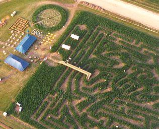
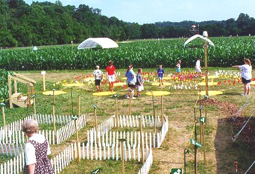
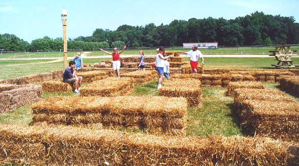

|
The idea for these mazes began in January 1993 when I was invited to participate in a puzzle exhibit at the Atlanta International Museum of Art and Design. The exhibit was dedicated to Martin Gardner, who wrote the Mathematical Games column in Scientific American. I was invited because Gardner had twice written about my game Eleusis and had printed two of my mazes.
I designed a maze for the museum that was a grid of paths to walk on. There were twelve intersections where the paths crossed. As you approached an intersection you saw a sign on your right with one or more arrows. The arrows told you what turns you could make at the intersection—
My maze was quite popular. The opening of the exhibit was attended by some of the most brilliant scientists and mathematicians in the country. (I’m really not exaggerating here. A lot of scientists are also interested in mazes and other forms of recreational mathematics.) Many of them were willing to spend up to an hour in the maze until they found the solution. But the day after the opening was also interesting. Groups of school children arrived at the museum, and they also enjoyed the maze. Some of the brighter kids followed the rules and stuck with the maze until they solved it. Others missed a sign here and there but thought they had solved the maze. And the youngest kids just ran around the maze and happily ignored the rules. And everybody had fun. This gave me the glimmer of an idea: Maybe I shouldn’t design mazes only for brilliant intellectuals. That idea sounds obvious now, but in the past I had tried to make my mazes as difficult as possible.
I wrote about my experiences at the Atlanta museum in the introduction to my book SuperMazes. One of the people who read the book was Don Frantz, whose American Maze Company had started the craze of large cornfield mazes that are popping up around the country. When Don built a cornfield maze, he liked to include three or four small mazes next to it—
A digression about small mazes: Some amusement facilities have tried to add a small maze, thinking they can provide something interesting without devoting a lot of space. These small mazes never work. A conventional walk-
Don Frantz got in touch with me and asked me to design some small mazes he could use next to his cornfield mazes. I provided a few designs, and he picked three of them to implement. Actually each maze was implemented six times, once at each of his cornfield maze sites during the summer of 1998. |

The first site to open was on July 4, 1998 at Tanglewood Park just west of Winston-
Between the circular labyrinth and the blue tent are six small squares. That’s my Arrow Maze. To their right are 14 yellow circles, which is my Color Maze. And to the left of the Arrow Maze is my No-Left- 

When I started working on these walk-
Rules are Nifty: Outside the main corn-maze, there are several small
ones — not corn mazes; they’re made of hay bales and ribbons and such.
These use some wackier ideas, to make up for being able to see over the
walls. One has colored paths, and you have to follow paths in the order
yellow, red, blue. Another — surprisingly difficult — allows only
right turns, never left. (Sound like a simple rule? The consequences
take some time to work out, and then there’s a new shape in your head.
That’s what puzzles are for.) Click here if for the complete review or click here for Andrew Plotkin’s home page.
ACM, the Association for Computing Machinery, runs a programming contest every year. In 1999, the contest was to write a program that would solve one of my logic mazes. Here is my write-up of the contest.
February 15, 2001: I used to have a diagram of my No-Left-Turn maze on this web page, but it was being copied and it showed up in some commercial venues without any credit (or money) given to me. So I had to take the diagram down. That’s unfortunate, because it made an interesting puzzle. However, if you’d like to try a puzzle like this, here’s something even better: Andrea Gilbert has created a Java program that lets you solve two no-left-turn mazes. Click here for her program. (So why aren’t we worried that someone will copy and build her mazes? Well, for various reasons, they wouldn’t work well as walk-through mazes. Some mazes work best as walk-throughs, some work best in a computer program, and some even work best on the printed page.)
To pictures of my mazes during the summer of 1999
How to locate a good cornfield maze
In the foreground of this picture is the Arrow Maze. It’s similar to the maze I did for the Atlanta museum, but a little smaller. It probably was a little too difficult, but that didn’t seem to bother anybody. In the background is the Color Maze where you follow a yellow path, a red path, a white path, a yellow path, etc. It was moderately difficult and worked well.
And next is the best of the mazes, the No-Left-
These mazes were a great success. The best compliments I got were from people who said they wanted to build similar mazes in their back yards. And the mazes worked for all ages. The very young were happy to wander around, especially among the hay bales, and no one even told them this was a maze. Meanwhile, their parents could also be in the maze attempting to discover the solution. Later Developments:
On Septmber 14, 1998, Andrew Plotkin wrote an insightful review about the corn maze in Paradise, Pennsylvania. He had this paragraph about my mazes: